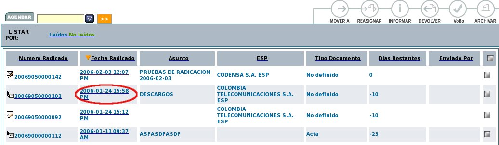

Incluir Radicados en un expediente
Esta funcionalidad permite al usuario agrupar varios radicados que se encuentren registrados en el sistema y asociarlos en una sola carpeta denominada EXPEDIENTE. Estos expedientes virtuales se van conformando a medida que el usuario o usuarios incluyen radicados en determinado nombre de expediente, logrando en una sola ventana mostrar todos los documentos involucrados en el mismo proceso y los cuales se encuentran físicamente archivados.
Los
expedientes se conforman teniendo en cuenta el año y la
dependencia. Cada expediente refleja como se encuentran organizados
físicamente los archivos de cada una de las áreas
productoras.
1. Seleccionar la carpeta donde se encuentra el radicado que será incluido en el expediente:
2. Ingresar al radicado por la fecha de radicación:

3. Dar click en la pestaña Expedientes:

4. El sistema se ubica en la vista de "Expedientes" la cual está compuesta por:
a. Documento anexo de: Indica si el radicado ha sido generado a partir de uno existente en el sistema. Es decir se muestra su radicado padre.
b. Enlace “INCLUIR EN”muestra la pantalla que permite incluir el radicado en un expediente y enlace “CREAR”muestra la pantalla de creación de un nuevo expediente. (Se debe tener en cuenta que para que este enlace aparesca se debe poseer permiso de creacion de expedientes.)
c. Enlace a la pantalla del Historial del expediente.
d. Enlace a la pantalla que indica que documentos han sido Borrados del expediente.
e. Enlace “INCLUIR DOCUMENTOS EN EXPEDIENTE”muestra la pantalla de permite anexar los documentos necesarios en el mismo expediente donde se encuentra el radicado.
5.
Incluir Radicado en Expediente:

Para incluir un radicado en un expediente se debe tener en cuenta que todos los expedientes creados tienen la siguiente estructura:
|
2006 |
905 |
14 01 |
00012 |
E |
|
Año |
Dependencia |
Serie SubSerie |
Número de Expediente |
Indica que es un Expediente |
Nota: Un usuario puede incluir un radicado a cualquier expediente si importar que el usuario no pertenezca a la dependencia que creo el Expediente. Esta opcion esta habilitada para todos los usuarios.
a.
Diligenciar en la caja de texto el número de expediente que
desea incluir.
b. Dar click en el botón "Incluir en
Exp"
c. El sistema solicita la confirmación de la
Inclusión o Asociación del radicado al expediente.

d. Dar
click en el botón Confirmar
e. El sistema graba los datos
del radicado en el cual se encuentra ubicado y aparece esta
información en la vista del expediente, indicando el número
del expediente a donde se incluyó (el numero indicado en el
punto a, más una letra E, que indica Expediente) y los
documentos anexos que tiene dicho radicado y que pertenecen a este
expediente.
Para todos los radicados que son grabados en un expediente, automáticamente se envia una notificación a las personas de Archivo para que realicen el procedimiento de Archivado físico del documento a cada expediente.
El expediente virtual debe reflejar una fiel copia del expediente físico, por lo anterior, recuerde entregar todos los documentos físicos que cree o que incluya en un determinado expediente, al grupo de archivo correspondiente.
A. Cuando el radicado ya ha sido incluido en un expediente se pueden realizar las siguientes acciones: Incluir en otro expediente el mismo radicado (Para el cual se deben seguir los mismos pasos, lo unico es que se da clic en este enlace), Excluirlo de alguno y ademas la Creación de un nuevo expediente para el mismo radicado